2026 Men’s March Madness NCAA Basketball Tournament Matchup Predictions
2026-03-22
Chapter 1 March Madness Matchup Predictions
1.1 Introduction
Objective
Predict correct winners of the 2026 Men’s NCAA March Madness tournament matchups through ensembles of various machine learning models (logistic regression, random forest, extreme gradient boosting (XGBoost), support vector machines (SVM), Naive Bayes, and multivariate adaptive regression splines (MARS))
- For the 2023-2025 March Madness tournaments, the 2008-2022 Random Forest model performed the best, while doing an excellent job at identifying early round upsets, such as:
- 15 seed Princeton Sweet 16 run (2023)
- 5 seed San Diego State winning the championship (they lost in the 2023 championship!)
- 11 seed NC State to the Elite 8 (and they even surpassed this expectation! 2024 DJ Burnsss!)
- 11 seed Duquesne over BYU and 12 seeds Grand Canyon + James Madison over Saint Mary’s + Wisconsin, respectively (2024)
- 12 seed Colorado State over Memphis (2025)
I aim to compare how my predictions fared at the end of the 2026 March Madness tournament to see what was right (and hopefully not wrong!). Please see the Results and Recommendations section for a more detailed analysis of these model performances and my 2026 picks.
Background
The NCAA March Madness tournament is an annual basketball tournament held every March. 64 teams compete against each other in a single game elimination bracket style tournament. Individuals can build predictions on who they think will win for each possible matchup and how the bracket will turn out for each round of the March Madness tournament (Round of 64, Round of 32, Sweet 16, Elite 8, Final 4, and Championship). The odds of a perfect bracket are 1 in 9.2 quintillion, if you chose winners at random.
Consequentially, I was interested in using my data science skills and machine learning models to help me in predicting the winners of these brackets. While I like to believe I will create a perfect bracket through intuition, the statistics on team performance throughout the year provide data backed decisions on who to choose for each matchup in the NCAA tournament.
I am usually not very good at building a bracket, so I hope to let the data assist in making some (correct) decisions for me!
How are points calculated for March Madness brackets in the ESPN Tournament Challenge?
Round of 64 = 10 points per correct pick (32 games)
Round of 32 = 20 points per correct pick (16 games)
Sweet 16 = 40 points per correct pick (8 games)
Elite 8 = 80 points per correct pick (4 games)
Final 4 = 160 points per correct pick (2 games)
Championship = 320 points per correct pick (1 game)
The maximum possible points you can earn for a perfect bracket is 1920 points. In general, I would say most of my brackets in the past have scored around 400 - 900 points. Winning a large bracket pool usually will take a score of least 1000 points (picking the champion or some of the final 4 teams), but it depends on how the pool plays year to year.
It’s extremely important to have your Elite 8 and Final 4 teams still alive after the first two rounds of the tournament because that keeps you in the running for the maximum points possible. The best bracket I have ever created was for the 2017 March Madness tournament, where I picked UNC to win the whole tournament and (luckily) chose South Carolina to be in the Final 4. This bracket scored a 1630.
Data Collection
The data is from the 2008 to 2025 March Madness tournament teams. There are 63 games every tournament and 1,143 teams over this time frame (1 team had to forfeit in 2021 due to COVID-19). I chose to start in 2008 due to availability of the data as well as I wanted to use data that relevantly reflected the style of play of today’s game.
Team data was scraped using the hoopR package created by Saiem Gilani (https://hoopR.sportsdataverse.org). Please check the file dataset build.R for the full dataset creation, including feature engineering and weighting analysis, and March Madness Variable Documentation.pdf for the documentation of the variables on on my Github.
This data included:
Season
Team Name
Tournament Performance
Team Performance Metrics (per-game average)
- Field Goal %
- 3-point %
- Free Throw %
- Total Rebounds
- Offensive Rebounds
- Defensive Rebounds
- Assists
- Steals
- Blocks
- Turnovers
- Personal Fouls
- Points Scored
- Opponent Points Scored
- Opponent Field Goal %
- Opponent 3-point %
- Effective Field Goal %
- Margin of Victory
- Win-Loss %
- Foul Outs
- Starters
Advanced Metrics
- Unadjusted Offensive/Defensive Efficiency
- Pace of Play (“Possessions”)
- Extra Scoring Chances
- % of Starters Shooting 3’s
- % of 3-point Shooters Shooting >= 35%
- Opponent Turnover / Team Turnover Ratio
- Assists / Turnover Ratio
- Win-Loss % in Close Games
- % of Close Games
- % of Blowout Games
- Kill Shots
- Starters vs. Minutes Played Discrepancy Index
- Bart Torvik BARTHAG
- Bart Torvik Adjusted Offensive Efficiency
- Bart Torvik Adjusted Defensive Efficiency
- Bart Torvik Wins Above Bubble (WAB)
Team Metrics
- Conference
- Power Conference Indicator [ACC, SEC, Big12] (binary)
- Power Conference (Extra) Indicator [ACC, SEC, Big12, Big Ten, Big East] (binary)
- Conference Tournament Performance
- % of Guards
- Team Health Status
- Years of Experience
- Women’s Team Participating in March Madness Tournament Indicator (binary)
Coach Metrics
- Career Win-Loss %
- Career Games Coached (Log-Adjusted)
- Career March Madness Efficiency
- Current School March Madness Efficiency
Feature Engineered Variables
- Pythagorean Win Expectation
- Luck (a.k.a. Expected - Actual Win-Loss %)
I purposefully excluded certain variables, such as team seeding, KenPom data, or NET/RPI ratings. I think this would bias the model and I want to ensure that the predictions made are truly purposed on team matchup, not the seed they are given. Additionally, KenPom’s publically available data is only on post-tournament performance, not pre-tournament metrics.
Note: The NCAA tournament selection committee, up until 2018, used the ratings percentage index (RPI), to decide which teams should play in the March Madness tournament or not. After 2018 they decided to switch to NCAA evaluation tool (NET) to pick teams, as it does a better job at evaluating a team’s strength of schedule. Since the committee no longer uses this RPI variable to select teams, I was unsure of whether or not to include this variable in the model since the timeframe of my dataset covers both pre and post RPI use.
- In a previous analysis done in July 2024, I performed a Likelihood Ratio Rest for a model with and without the two RPI variables (total team RPI and team RPI strength of schedule). The results of the test fails to reject the null hypothesis, proving that the smaller model (without RPI variables) is the better model. I used AIC and BIC to prove this evaluation and did decide to not include the RPI variables in the model at all.
- Please see the analysis here: https://github.com/tylerfarr5/march-madness
1.2 Methodology
A quick snapshot of what the data frame looked like is provided below:
## season team_id team_name conf_perf fgpct threeptpct ftpct treb oreb dreb ast
## 1 2008 6 South Alabama Semifinals - L 0.4764320 0.3668399 0.7025607 40.58269 12.253462 25.25596 15.73885
## 2 2008 8 Arkansas Final - L 0.4680048 0.3300595 0.6755562 39.80664 13.038462 24.17841 15.13802
## 3 2008 12 Arizona Quarterfinals - L 0.4817532 0.3905215 0.7478065 34.58030 8.331061 23.26515 16.00303
## 4 2008 24 Stanford Final - L 0.4572964 0.3727189 0.6961484 41.91250 13.004167 25.72500 14.50833
## 5 2008 26 UCLA Final - W 0.4914249 0.3521814 0.7350288 39.01506 12.181410 24.04519 15.23590
## 6 2008 30 USC Semifinals - L 0.4782290 0.3880055 0.6808590 38.10000 9.406667 24.98333 12.41000
## stl blk to pers_fouls ppg opp_ppg opp_fgpct opp_threeptpct efgpct mov pace
## 1 6.301346 3.109423 13.83981 16.88846 75.48846 64.01058 0.4134490 0.3256173 0.5405934 11.477885 66.85025
## 2 7.313986 5.425000 15.75009 18.49397 74.19825 65.03418 0.4093589 0.3239489 0.5202009 9.164073 69.96987
## 3 5.411364 3.626515 12.54091 16.42955 72.44697 66.39167 0.4369356 0.3483680 0.5480884 6.055303 65.87947
## 4 4.562500 5.116667 12.75833 16.80000 71.47917 59.16667 0.3950527 0.3254735 0.5106002 12.312500 64.75429
## 5 7.175321 3.751603 12.62340 13.74936 75.43622 57.95545 0.4209646 0.3363128 0.5441623 17.480769 65.36791
## 6 5.825000 4.271667 14.68333 15.55833 69.40167 62.44000 0.3907749 0.3049929 0.5368010 6.961667 66.82975
## unadj_off_eff unadj_def_eff starters starters_shooting_threes_pct three_pt_shooters_at_35pct_pct extraScoreChances
## 1 1.129715 0.9573548 7.0 0.5000000 0.7083333 2.244615
## 2 1.060435 0.9303140 7.5 0.4446429 0.3500000 2.457605
## 3 1.100104 1.0097940 7.5 0.4732143 0.7083333 -2.290152
## 4 1.103355 0.9144293 7.5 0.3589286 0.7000000 2.708333
## 5 1.153592 0.8866402 7.5 0.4555556 0.5000000 6.610897
## 6 1.038819 0.9360089 7.0 0.4285714 0.6000000 -3.821667
## oppTO_teamTO_ratio ast_TO_ratio foul_outs adj_bayes_win_rate_close close_pct blowout_pct healthy_rate pct_guards
## 1 1.0473138 1.1440914 4.0 0.6097406 0.2898077 0.2278846 0.00000000 0.5714286
## 2 1.0002789 0.9677950 1.7 0.6580147 0.2055070 0.3239510 0.10398975 0.4017857
## 3 1.0419195 1.2856995 2.2 0.2833703 0.2613636 0.1378788 0.40604250 0.5357143
## 4 0.9701197 1.1385211 1.0 0.7558217 0.2166667 0.3041667 0.09091085 0.3928571
## 5 1.2038929 1.2044859 2.0 0.7035221 0.1810897 0.4701923 0.15789605 0.4722222
## 6 0.9294418 0.8442385 4.9 0.5737741 0.1983333 0.2400000 0.24744933 0.5714286
## kill_shot_count coach_career_adj_win_pct coach_career_log_games_total coach_career_adj_march_eff
## 1 8.2 0.5954625 5.863631 0.9786641
## 2 3.5 0.5528807 4.997212 0.8340552
## 3 4.9 0.4839724 5.762051 1.9234200
## 4 4.5 0.5397023 5.505332 1.5314373
## 5 8.5 0.6441103 5.991465 3.5000000
## 6 4.1 0.6454545 6.089045 1.6666667
## coach_curr_school_march_eff avg_team_exp smdi womens_team_tourney_flag Conference power_conf power_conf_extra AdjOE
## 1 1.000000 2.444444 0.0 0 Other 0 0 110.6438
## 2 0.000000 2.888889 0.4 0 SEC 1 1 107.3480
## 3 0.000000 2.555556 0.0 0 Other 0 0 114.5598
## 4 1.000000 2.800000 0.2 1 Other 0 0 110.6902
## 5 4.666667 2.666667 0.0 0 Other 0 0 115.0268
## 6 3.000000 1.875000 0.0 0 Other 0 0 106.8819
## AdjDE BARTHAG WAB tourney_summary tourney_perf wlpct pyth_exp luck deep_run
## 1 97.93999 0.8012971 -0.08472142 R64 R64 - L 0.8064516 0.7887060 -0.017745648 0
## 2 91.70530 0.8595063 0.27887060 R32 R32 - L 0.6875000 0.7079574 0.020457390 0
## 3 94.00743 0.9059942 0.72769081 R64 R64 - L 0.5625000 0.6621287 0.099628703 0
## 4 88.65250 0.9268911 3.34921846 S16 S16 - L 0.7812500 0.7852682 0.004018175 0
## 5 86.03552 0.9657834 5.35500547 F4 F4 - L 0.9393939 0.8850946 -0.054299357 1
## 6 88.79732 0.8932916 1.78994964 R64 R64 - L 0.6451613 0.6796046 0.034443330 0Matchups
Since the dataset will be structured in a matchup structure, where we have TeamA and TeamB who play each other - here are some of the rules in place in the dataset:
The higher seed will always be TeamA (home team) and the lower seed will be TeamB (away team)
For matchups with two of the same seeds (ie: 1 v 1), then TeamA will be the team on the top of the tournament bracket. If it’s the national championship and both teams are, for example, from the bottom of the bracket, then TeamA will be the team from the right side of the bracket.
It is important to emphasize that tournament success in March Madness is truly matchup dependent. I will examine the characteristics of successful teams in the tourney, but the actual model will be built on matchups.
To that extent, I differenced each teams’ season statistics to evaluate how good or bad the teams are relative to their opponent. The differenced values were used as predictors in the model. This was: (TeamA - TeamB)
While the model is built on the differenced matchup data, I chose to perform exploratory data analysis (EDA) on the team’s individual stats (before differencing) to get a better idea of the profiles of successful teams.
Data Structure Assumptions
While building out the data for this analysis, I hoped to identify a team for what it was worth as they entered the tournament. This means I had to make some critical assumptions:
Team statistics from previous tournaments cannot include NCAA March Madness tournament performance. All stats must be compiled from the beginning of the season through the Monday before the tournament starts.
- In a previous analysis done in July 2024, I performed paired t-tests (Wilcoxon signed rank test) and tests of normality (Shapiro-Wilks test) to evaluate pre & post tournament performance on a variety of team metrics to see if there was a significant difference. There were multiple variables that were statistically different before and after the tournament, which led me to conclude that I needed to use pre-tournament numbers.
- Please see the analysis here: https://github.com/tylerfarr5/march-madness
- In a previous analysis done in July 2024, I performed paired t-tests (Wilcoxon signed rank test) and tests of normality (Shapiro-Wilks test) to evaluate pre & post tournament performance on a variety of team metrics to see if there was a significant difference. There were multiple variables that were statistically different before and after the tournament, which led me to conclude that I needed to use pre-tournament numbers.
I had the choice to build a continuous target variable (margin of victory) or a binary target variable (did TeamA win or lose?). I chose to model the binary target variable for whether or not TeamA won.
When considering team success/metrics, I wanted to give more weight to second half of the season performance vs. the first. Likewise, every game in the March Madness tournament is an away game, so I specifically sectioned the second half of the season performance to home & away games.
In order to do this, I calculated the optimal weight for each of these three time periods by building a quick logistic regression to determine which weight predicted a “deep run” in the tournament (Elite 8 or better).
Off of personal intuition, I ensured that the second half (away) games received the highest weight to create one dataset. Outside of my own intuition, I also let the model determine the optimal weight with no bounds to create a second dataset. Surprisingly, the first half of the year had a very high relationship with the tournament performance.
My assumption is that, like the NBA, the best predictors of post-season performance are 1) early in the season and 2) right after All Star break, which likely correlate with when a team is most healthy. While we can’t guarantee the health of a team going in to March Madness, this relationship makes sense why the model might favor that as well.
The optimal weighting of the first half, second half-home, and second half-away is 30%, 40%, and 40%, respectively, when favoring the second half (away) games. The optimal weighting of the first half, second half-home, and second half-away is 50%, 30%, and 20%, respectively, when letting the model free-roam. Please see the code appendix for further information on how this was determined.
There was no missing data in the dataset.
1.3 Exploratory Data Analysis (EDA)
Here, I dive a little deeper into various relationships between the variables and team performance in the tournament. I am mainly interested in understanding the profiles of successful tournament teams.
My favorite starting point is a correlation matrix of the numeric variables to see if there’s any major multicollinearity or noticeable findings.
There is a strong correlation between expected variables, like FG% and eFG% or a coach’s career march madness performance vs. the current school. One interesting finding is a strong correlation between extra scoring chances and the opponent turnover to team turnover ratio. My hypothesis is that a higher OppTO/TeamTO ratio mean’s the team is protecting the ball well, which in turn relates to fundamentals in basketball, where they also rebound well on offense.
There is a strong negative correlation between WL % and a close game %. Expectedly, team’s with higher margin of victories are less likely to face a loss. Another strong negative correlation is the AST/TO ratio and personal fouls, which makes sense as team with strong fundamentals and ball security are less likely to commit personal fouls.
This one might be a spurrious correlation, but there is a strong negative correlation between free-throw % and offensive rebounds. My guess to explain this is that higher offensive rebounds leads to more second chances & getting fouled under the rim. Since those rebounding are typically bigs (centers and forwards), they probably don’t shoot as well at the free throw line as guards, hence the lower free throw percentage (see DeAndre Jordan highlights).
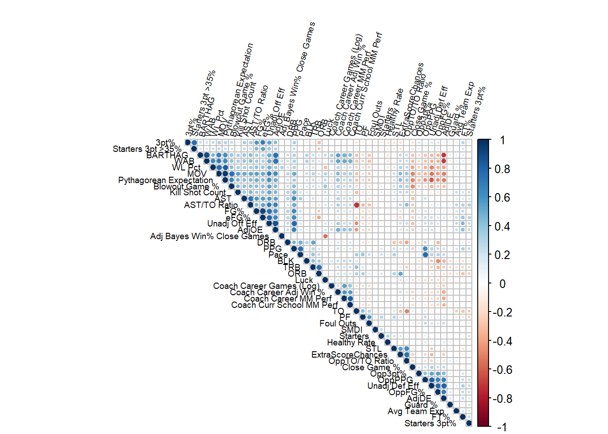
Next, I also wanted to see these correlations in a tabular format so I could quickly sort through the strongest correlations. I used a function I found online to flatten out the correlation matrix to pair relationships.
flattenCorrMatrix <- function(cormat) {
ut <- upper.tri(cormat)
data.frame(
row = rownames(cormat)[row(cormat)[ut]],
column = rownames(cormat)[col(cormat)[ut]],
cor =(cormat)[ut]
)
}
res2<-rcorr(as.matrix(res))
previous.correlations <- flattenCorrMatrix(res2$r)
head(dplyr::arrange(previous.correlations, desc(cor)), 25)## row column cor
## 1 MOV Pythagorean Expectation 0.9940810
## 2 BARTHAG WAB 0.9852124
## 3 Coach Career MM Perf Coach Curr School MM Perf 0.9831546
## 4 FG% eFG% 0.9756155
## 5 3pt% Starters 3pt >35% 0.9634258
## 6 MOV Blowout Game % 0.9587194
## 7 Unadj Off Eff AdjOE 0.9505079
## 8 WL Pct Pythagorean Expectation 0.9438068
## 9 Blowout Game % Pythagorean Expectation 0.9429154
## 10 Unadj Def Eff AdjDE 0.9401461
## 11 MOV WL Pct 0.9317675
## 12 OppFG% Unadj Def Eff 0.9301840
## 13 Unadj Off Eff AST/TO Ratio 0.9229441
## 14 OppFG% AdjDE 0.9224541
## 15 OppPPG Unadj Def Eff 0.9214729
## 16 MOV WAB 0.9181648
## 17 MOV BARTHAG 0.9166949
## 18 3pt% eFG% 0.9097628
## 19 Coach Career Adj Win % Coach Curr School MM Perf 0.9073994
## 20 WAB Pythagorean Expectation 0.9053815
## 21 AST/TO Ratio AdjOE 0.9020318
## 22 FG% Unadj Off Eff 0.9014552
## 23 BARTHAG Pythagorean Expectation 0.9006141
## 24 Coach Career Adj Win % BARTHAG 0.8994284
## 25 Coach Career Adj Win % Coach Career MM Perf 0.8952862## row column cor
## 1011 AdjDE WL Pct -0.7316646
## 1012 TO AdjOE -0.7346567
## 1013 AST/TO Ratio Foul Outs -0.7358982
## 1014 Adj Bayes Win% Close Games Luck -0.7388249
## 1015 TO Unadj Off Eff -0.7441680
## 1016 PF AST/TO Ratio -0.7479785
## 1017 Close Game % Kill Shot Count -0.7504717
## 1018 Coach Curr School MM Perf AdjDE -0.7557696
## 1019 Foul Outs BARTHAG -0.7580086
## 1020 Coach Career MM Perf AdjDE -0.7636950
## 1021 Foul Outs WAB -0.7639816
## 1022 Unadj Def Eff Pythagorean Expectation -0.7731738
## 1023 MOV AdjDE -0.7772911
## 1024 Close Game % BARTHAG -0.7898673
## 1025 Close Game % WAB -0.7945664
## 1026 Coach Career Adj Win % AdjDE -0.7954312
## 1027 AdjDE Pythagorean Expectation -0.7980547
## 1028 BLK OppFG% -0.8016948
## 1029 Close Game % WL Pct -0.8386820
## 1030 AdjDE WAB -0.8426178
## 1031 AdjDE BARTHAG -0.8479509
## 1032 TO AST/TO Ratio -0.8894272
## 1033 Close Game % Pythagorean Expectation -0.9006120
## 1034 MOV Close Game % -0.9080614
## 1035 Close Game % Blowout Game % -0.91455441.3.1 Visual Exploration
Looking at tournament performance - there is minor fluctuation from tournament to tournament, but generally speaking the higher seed wins ~69% of the time.
Interestingly, 2015 and 2025 both had 3 or 4 1-seeds in the Final Four, respectively - which makes sense for the higher seed win percentage those years. However, 2017 saw a Final Four of two 1-seeds, a 3-seed, and a 7-seed - which means there was probably more chalk matchups throughout the earlier rounds.
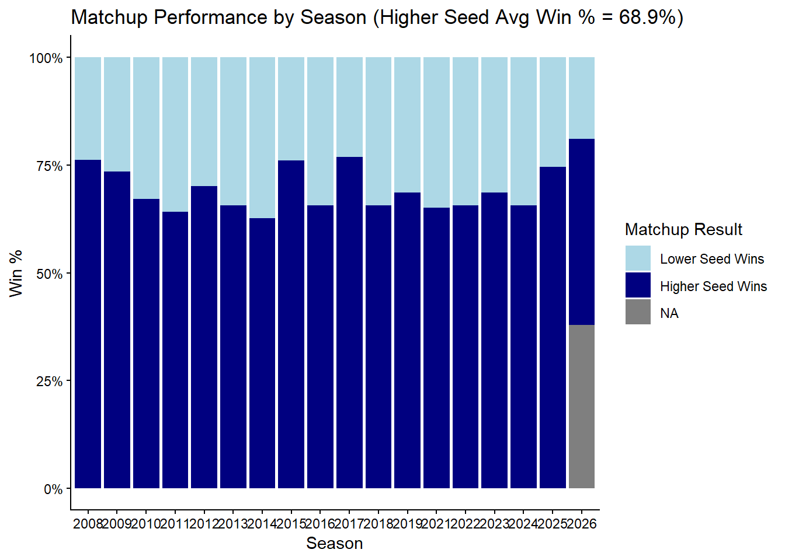
Next, let’s further break this down by tournament performance and predictor variables. Starting with the categorical variables, I will examine:
- Women’s Team Participation in March Madness Tournament
- Conference Tournament Performance
- Power Conference
The women’s team bid shows an interesting relationship where teams who make it to later rounds of the tournament have a women’s team in the tournament as well. While the sample size for Final Four teams is considerably smaller, it is interesting that 71% of the Final Four teams had a women’s team playing as well. My theory is that school spirit and team success go hand-in-hand during March Madness. To make this an even more stark contrast, I would like to know the seed of those women’s teams…. perhaps women’s teams that go far in the women’s tournament goes hand in hand with men’s teams going far in the tournament.
While I was a student at NC State in 2024, I noticed this, as both the men’s and women’s teams made the Final Four!
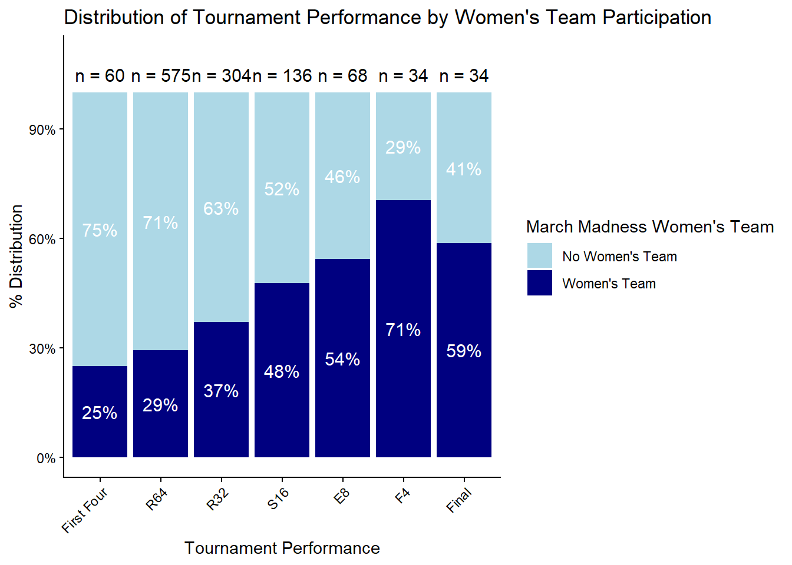
Now, moving on to how the conference tournament - this visual breaks out conference performance vs. March Madness performance. The main thing that sticks out to me is that there is a U-shaped distribution for teams that won their conference tournament (I investigate this below).
60% of the teams that lose in the Round of 64 had won their conference tournament, which is primarily the weaker conferences that got auto-bids to the tournament.
On the other hand, ~50% of the teams that lose in the Final Four or Championship had won their conference tournament, which is primarily the stronger P4 basketball conferences like the ACC, Big12, SEC, and Big10 (keeping in mind the smaller sample size though).
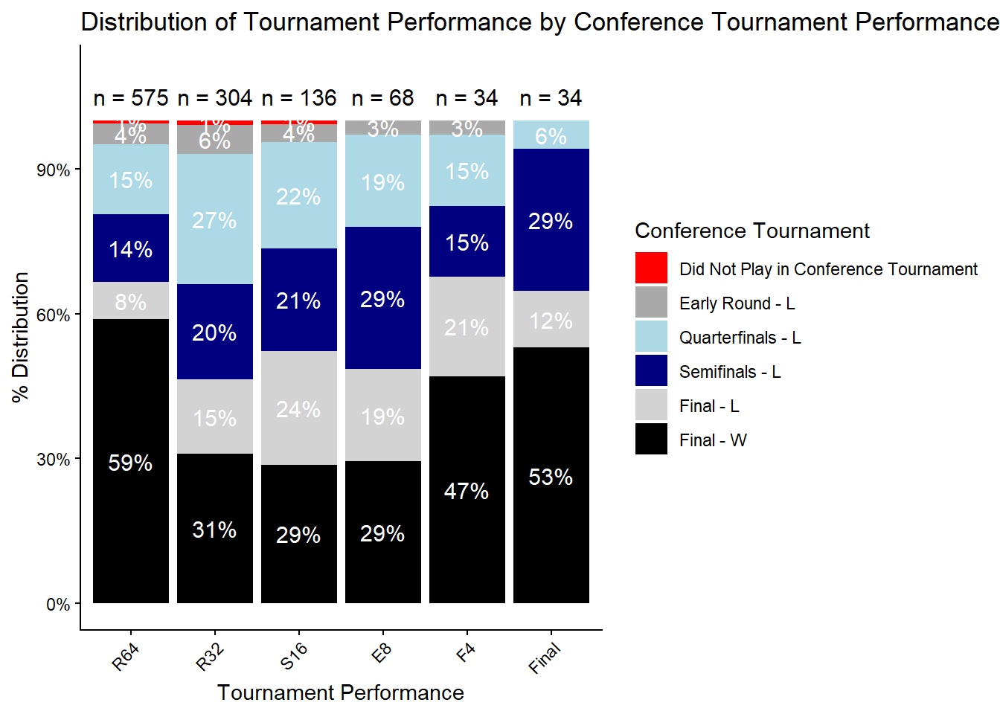
After seeing this graph, my immediate next question was - how can I facet this by the conference they play in. This highlights my exact point, where non-power conferences make up 81% of the R64 losses, while power conferences only make up 9% of the R64 losses.
On the other hand, for the teams that won their conference championship & were not in a power conference, that is a very small sample size (ie: San Diego St, Gonzaga, Butler, 2014 UConn), whereas power conference teams who won their conference tournament make up ~50% of the Final Four/Championship teams.
Similarly, I see teams that lost in the Quarterfinals of their conference tournament are primarily R64 or R32 losses. I wonder if this is because they lost early and had more time off between the loss and the start in tournament, so they could be rusty at the start of the tournament. Similarly, I noticed Gonzaga won the WCC conference tournament, but their tournament ended a full week before March Madness started.
# 1. Update summary table to include the binary variable
plot_df <- mm_data %>%
group_by(power_conf_extra, tourney_summary, conf_perf) %>%
summarise(n = n(), .groups = "drop") %>%
group_by(power_conf_extra, tourney_summary) %>%
mutate(
pct = n / sum(n),
label = percent(pct, accuracy = 1)
) %>%
filter(tourney_summary != "First Four")
# 2. Update sample size table to include the binary variable
n_df <- mm_data %>%
group_by(power_conf_extra, tourney_summary) %>%
summarise(total_n = n(), .groups = "drop") %>%
filter(tourney_summary != "First Four")
# 3. Create the faceted plot
ggplot(plot_df, aes(x = tourney_summary, y = pct, fill = conf_perf)) +
geom_col(position = "fill") +
# % labels inside bars
geom_text(aes(label = label),
position = position_fill(vjust = 0.5),
color = "white",
size = 3.5) + # Slightly smaller to fit side-by-side
# Sample size above bars
geom_text(data = n_df,
aes(x = tourney_summary, y = 1.05, label = paste0("n = ", total_n)),
inherit.aes = FALSE,
size = 3) +
# The magic line: Faceting
facet_wrap(~power_conf_extra,
labeller = labeller(power_conf_extra =
c("0" = "Non Power Conference",
"1" = "Power Conference (Big12, SEC, ACC, Big Ten, Big East)"))) +
scale_y_continuous(labels = percent_format(),
limits = c(0, 1.1)) +
scale_fill_manual(
values = c("red", "darkgrey", "lightblue", "navy", "lightgrey", "black")
) +
labs(
title = "Tournament Performance Distribution",
subtitle = "Faceted by Power Conference",
x = "Tournament Performance",
y = "% Distribution",
fill = "Conference Tournament"
) +
theme_classic() +
theme(
axis.text.x = element_text(angle = 45, hjust = 1),
strip.background = element_rect(fill = "lightgrey"), # Adds style to facet labels
strip.text = element_text(face = "bold")
)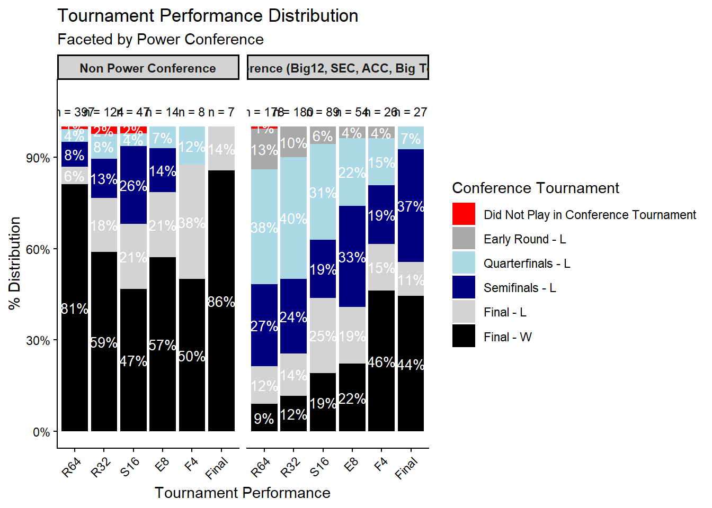
I will now examine tournament performance and numerical predictor variables. For simplicity, I look at all numeric variables at once. Here are the variables that show an increasing trend in value as we get to later rounds of the tournament:
- Assists
- Assists:Turnover Ratio
- Blocks
- Blowout Game %
- Coach Career March Madness Performance
- Coach Current School March Madness Performance
- Coach Career Games Coached
- Extra Scoring Chances
- Kill Shot Count
- Margin of Victory
- Offensive Rebounds
- Pythagorean Expectation Win %
- Win/Loss %
- WAB
Some of these make perfect sense, such as who is coaching, regular season win percentage or percentage of games beating an opponent by 20+. These are signs that indicate dominance, so we would expect these kinds of teams to go further. They are probably top seeds as well.
Additionally, some variables showed a decreasing trend as we get to later rounds of the tournament:
- Close Game %
- Foul Outs
- Healthy Rate
- Opponent PPG
- Guard %
- Personal Fouls
- SMDI
- Total Turnovers
Here, teams that have played in closer games all season, give up a lot of points, are injured, or even playing sloppy and fouling out…. These are all trends of teams that lose earlier in the tournament. I think an interesting trend is the teams in later rounds of the tournament are also have a slightly lower percentage of guards starting.
Notably, a weird trend I saw was with luck. This variable had negative values for all rounds except the Sweet16. My hypothesis is that the ‘lucky’ teams probably burn out their luck around the Sweet16 but make some early upsets to get them there!
# Select numeric variables (exclude IDs if needed)
num_vars <- mm_data %>%
dplyr::select(where(is.numeric)) %>%
dplyr::select(-team_id)
# Pivot longer and summarize
plot_df <- mm_data %>%
dplyr::select(tourney_summary, where(is.numeric)) %>%
dplyr::select(-team_id) %>% # remove numeric IDs if needed
pivot_longer(
cols = -tourney_summary,
names_to = "variable",
values_to = "value"
) %>%
group_by(tourney_summary, variable) %>%
summarise(
mean_value = mean(value, na.rm = TRUE),
.groups = "drop"
) %>%
filter(tourney_summary != "First Four")
# Plot
ggplot(plot_df, aes(x = tourney_summary, y = mean_value)) +
geom_col(fill = "navy") +
facet_wrap(~ variable, scales = "free_y") +
labs(
title = "Average Numeric Variables by Tournament Performance",
x = "Tournament Performance",
y = "Mean Value"
) +
theme_classic() +
theme(
axis.text.x = element_text(angle = 45, hjust = 1),
strip.text = element_text(face = "bold")
)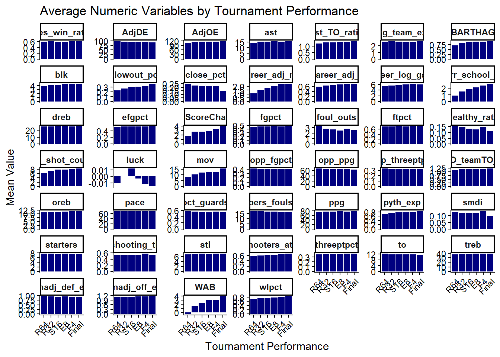
Lastly, here is a quick visual of what teams have played in the most March Madness games. Gonzaga, Kansas, and Michigan State lead the way with the majority of tournament appearances since 2008. This does not necessarily mean that they will win matchups, but it does indicate that they are teams who are experienced in showing up at the March Madness tournament. Tough teams to bet against.
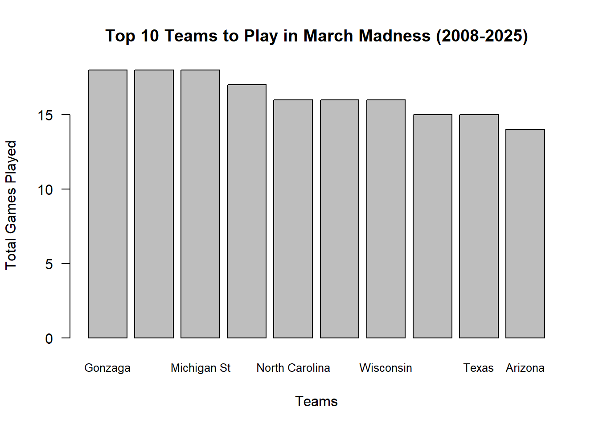
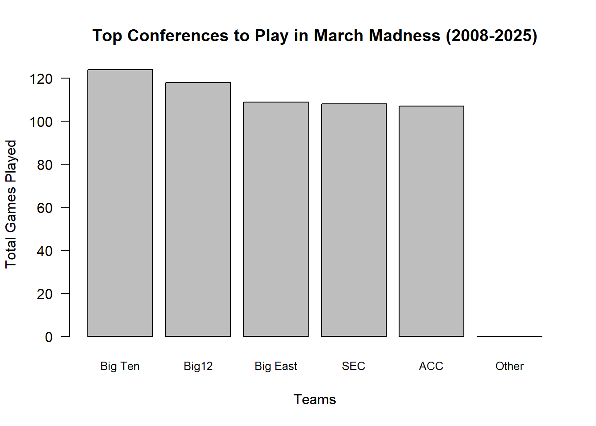
I am also interested in the variation from tournament to tournament, so I plotted all of the numeric variables over each season. Irregardless of their tournament performance, these trends help define the profile of a tournament team.
These variables have been trending upwards in recent years:
- Assists:Turnover Ratio
- Average Years of Experience
- Blowout Percentage
- Coach Career Win %
- Effective FG%
- FG%
- Free Throw %
- Healthy Rate
- Kill Shot Count
- Luck
- Opponent PPG
- PPG
- SMDI
- Starters
- 3pt % by starters
- Steals
- Unadjusted Offensive Efficiency
- Unadjusted Defensive Efficiency
These variables have been trending downwards in recent years:
- Blocks
- Foul Outs
- Opponent 3pt %
- Offensive Rebounds
- Personal Fouls
- Starters shooting >= 35% from 3pt
- 3pt%
- Turnovers
- Total rebounds
- BARTHAG
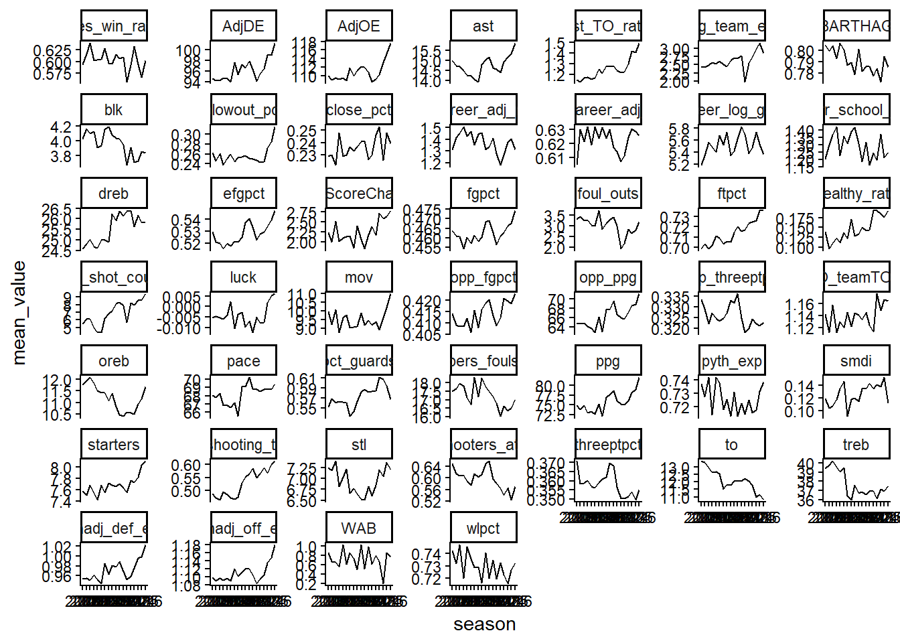
Additionally, I explored some density plots which show a strong separation between a “deep run” in the tournament, where a deep run going to the Elite 8, Final 4, or Championship. WAB, the pythagorean expected win %, and a coach’s career performance in March are the three best variables I found for creating a separation of team’s that make a deep run in the tournament vs. not. There are always exceptions, but these variables have created a clear separation between tourney performancre.
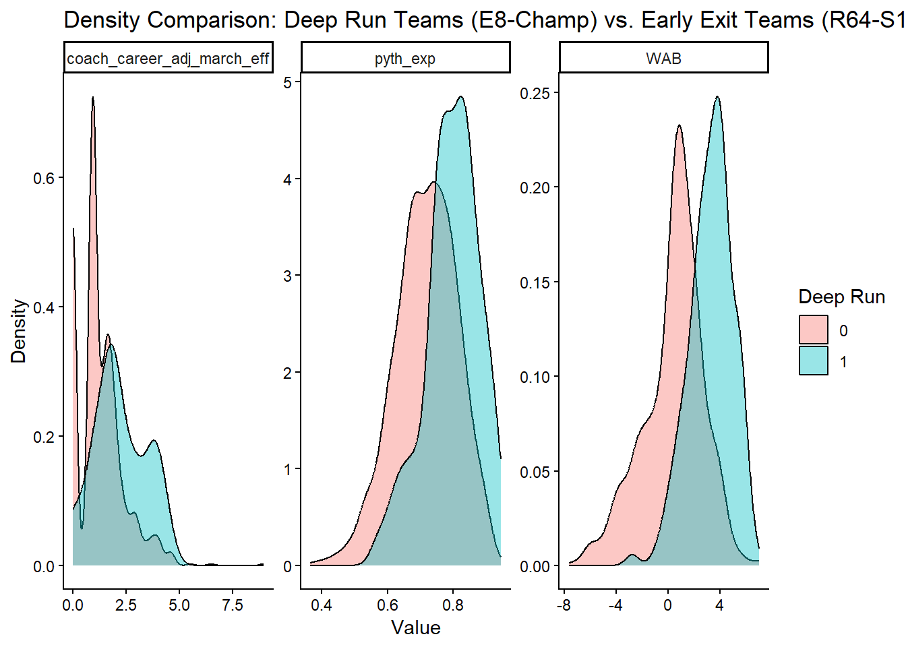
1.4 Modeling Preparation
Matchup Dataset Creation
As mentioned earlier, the model will be built on matchup data, where the team stats are differenced. The calculation is Team A (Home) {stat} - Team B (Away) {stat}.
Conditional Matchup Dataset Creation
There are two ways to evaluate my March Madness model. One is I can test the AUC of each model, for the matchups that already happened, and see the performance of the various models.
However, since I am building this bracket and do not know what the matchups will be beyond the known Round of 64, I am also testing the total ESPN points earned within the bracket. That is both if we let the model choose every matchup, as well as the points it would have earned.
In order to do this, I need to create a conditional dataset for every possible matchup in the 2023-2025 tournaments (in the instances where the model is wrong, I need to evaluate the hypothetical matchup my model creates to compare to the truth).
## Total matchups generated: 13668## season n_teams expected_matchups
## 1 2023 68 4556
## 2 2024 68 4556
## 3 2025 68 45561.5 Modeling
Now that the dataset is created, I am able to build out a variety of models I plan to test, including:
- Logistic Regression
- Random Forest
- XGBoost
- Support Vector Machine (SVM)
- Naive Bayes
- Multivariate Adaptive Regression Splines (MARS)
Model Evaluation
I chose to evaluate my models using area under the receiver operating characteristic (AUROC) curve, which balances sensitivity and specificity. Since the best bracket is typically the one that scores the most points in the ESPN Tournament Challenge, I also evaluated how well my model scored in terms of ESPN points.
As mentioned above, I generated every possible matchup for the 2023 - 2025 tournaments, so I could evaluate what the model chose in later matchups where it may have picked the wrong team to win in earlier rounds of the tournament.
Train/Test Split
Before the model is built, I did a train/test split of the 2008 to 2025 tournaments data. I chose to use the 2023-2025 tournaments as my test dataset and the 2008-2022 tournaments as the train dataset. The training set is 925 rows and the testing set is 201 rows.
train <- matchup_final[matchup_final$season %in% c(2008:2022),]
valid <- matchup_final[matchup_final$season %in% c(2023,2024,2025),]
train <- as.data.frame(train) #this helps SMBinning work
valid <- as.data.frame(valid) #this helps SMBinning work## [1] "Train Data (2008-2022 brackets) - Rows: 925"## [1] "Test Data (2023-2025 brackets) - Rows: 201"Conservative Alpha Level and Weighting
A conservative alpha level of 0.01, instead of 0.05, was chosen for model significance testing since there are 925 observations in the training set and we need to adjust it to reflect a higher sample size.
In a previous analysis done in July 2024, I explored creating weights, so that the model puts higher importance on a Round of 64 vs. a Championship matchup. My predictions for the Elite 8 won’t matter if I don’t have any correct teams in the Elite 8. Unfortunately, this model did not really significantly outperform other models.
- Please see the analysis here: https://github.com/tylerfarr5/march-madness
Logistic Regression
Logistic Regression is by far the most time intensive model in terms of validating assumptions, binning, and coding out the model. I start by validating assumptions of the logistic regression model in my dataset, which are independent rows and the continuous predictor variables are linearly related to the logit.
I first explored a distribution of each variable in the model (full output can be found in the appendix). Every variable was Normally distributed, with only slight skewness and not needing any major transformations.
In regard to checking the linearity assumption for the continuous predictor variables, I fit a GAM model and a logistic regression model with only one of the predictor variables at a time. Next, I run an Chi-Square ANOVA test to see if there is a statistically significant difference between the GAM model and the logit model. The loop prints out for each variable if the assumption was met or not met.
## Variable Assumption P.Value EDF
## 1 fgpct_diff ASSUMPTION NOT MET 0.00405 1.00119988289835
## 2 threeptpct_diff ASSUMPTION NOT MET 0.00312 1.00088890462944
## 3 ftpct_diff ASSUMPTION NOT MET 0.00503 1.00160753623409
## 4 treb_diff ASSUMPTION NOT MET 0.00333 1.00088581476841
## 5 oreb_diff Passed 0.04884 3.14417803070938
## 6 dreb_diff ASSUMPTION NOT MET 0.00503 1.00160352344585
## 7 ast_diff ASSUMPTION NOT MET 0.00229 1.00057591674086
## 8 stl_diff ASSUMPTION NOT MET 0.00268 1.00075309115229
## 9 blk_diff Passed 0.0502 1.03767107142083
## 10 to_diff ASSUMPTION NOT MET 0.00282 1.00079999497316Since over half of the variables did not pass the linearity assumption, I decided to explore strategically binning all continuous variables via SMBinning. The code below finds the optimal splits in a continuous variable that still capture the signal associated with predicting the winner of the matchup, however now transform the continuous to a categorical variable.
If a variable has no significant splits, that means the algorithm could not identify a significant split for the continuous variable, so it will be kept as one bucket. An example of the distribution of the Pythagorean Expectation and average margin of victory (MOV) variables are provided below. As you can see, there is a fairly stark difference in the MOV buckets, which should make for a good variable in the model.
The third plot shows the strongest predictors within the model based on information value (IV). IV measures the ability of a variable to separate winners and losers. While this metric is mostly used for variable selection in banking, I find it effective in this situation as well. I think it’s important to recognize that a common cutoff in banking is an IV greater than or equal to 0.1 to select variables, however, I wanted to keep all binned variables that were binned with an IV greater than or equal to 0.01 (which ended up being all variables binned).
Notably, the Bart Torvik BARTHAG, WAB, Adjusted Off/Def variables, and coach carere winning percentage are the strongest predictors.
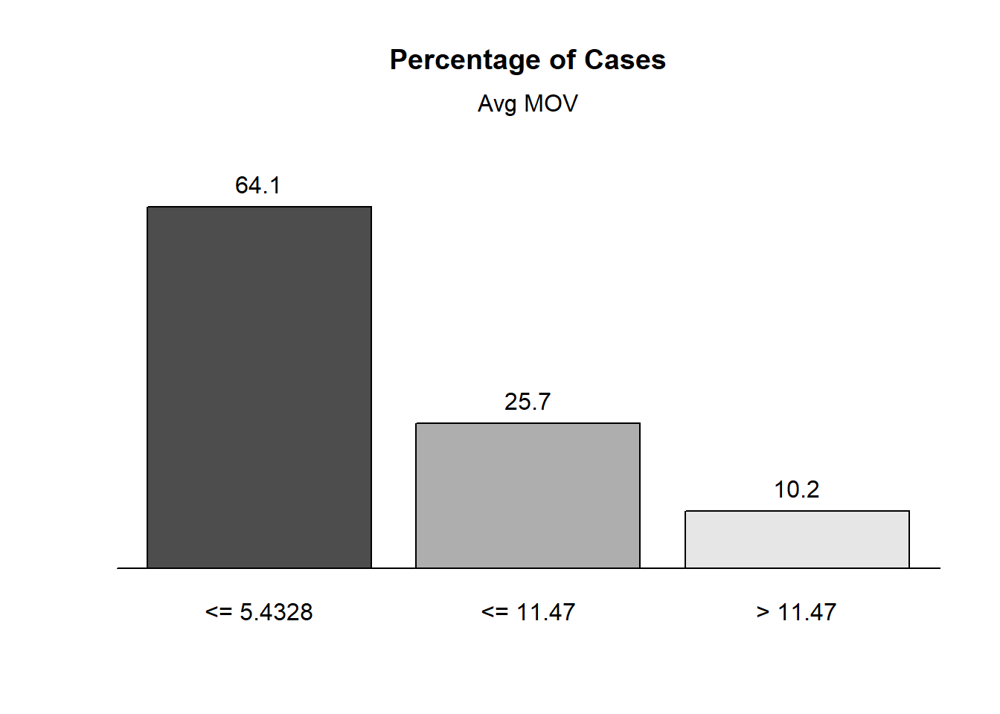
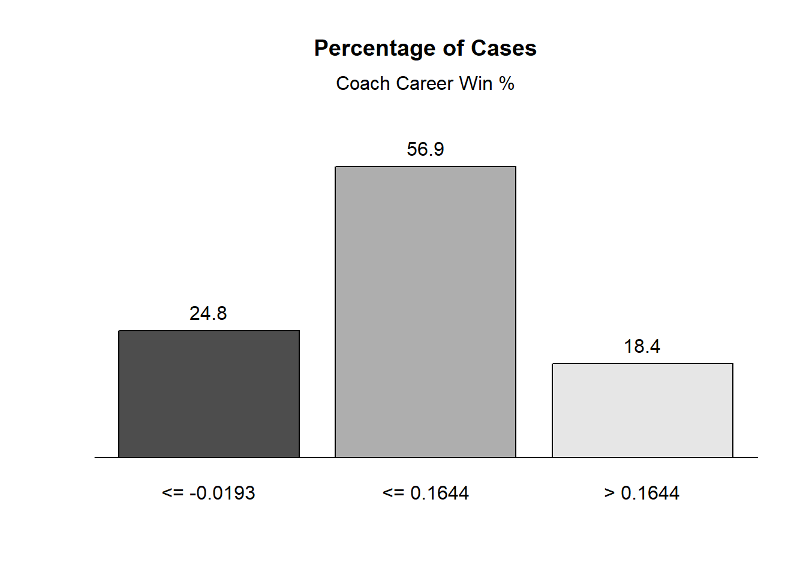
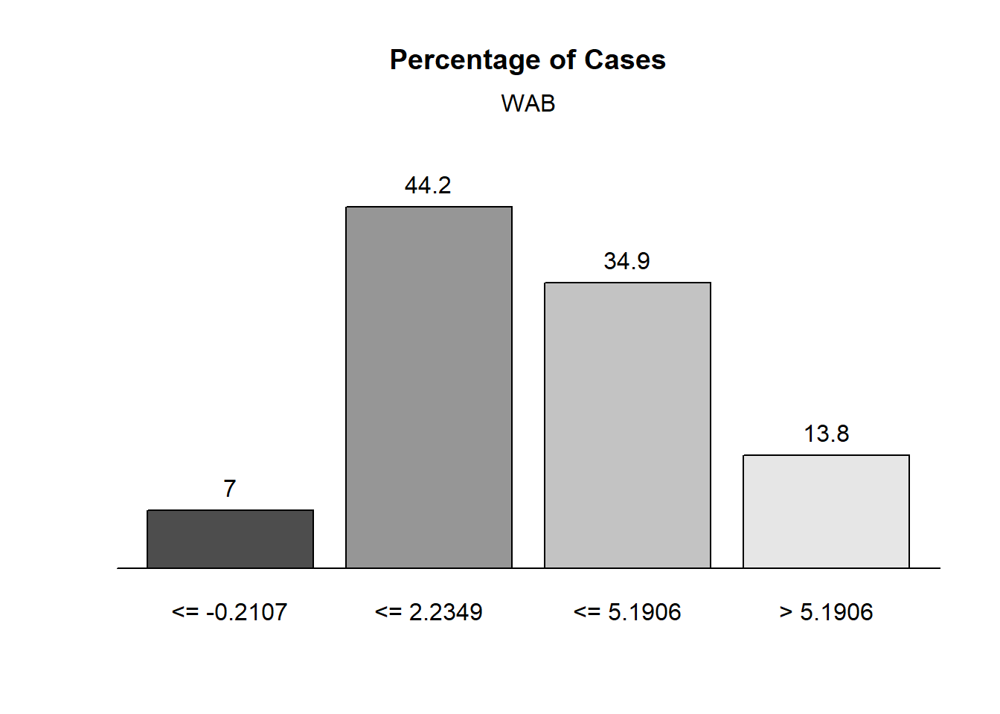
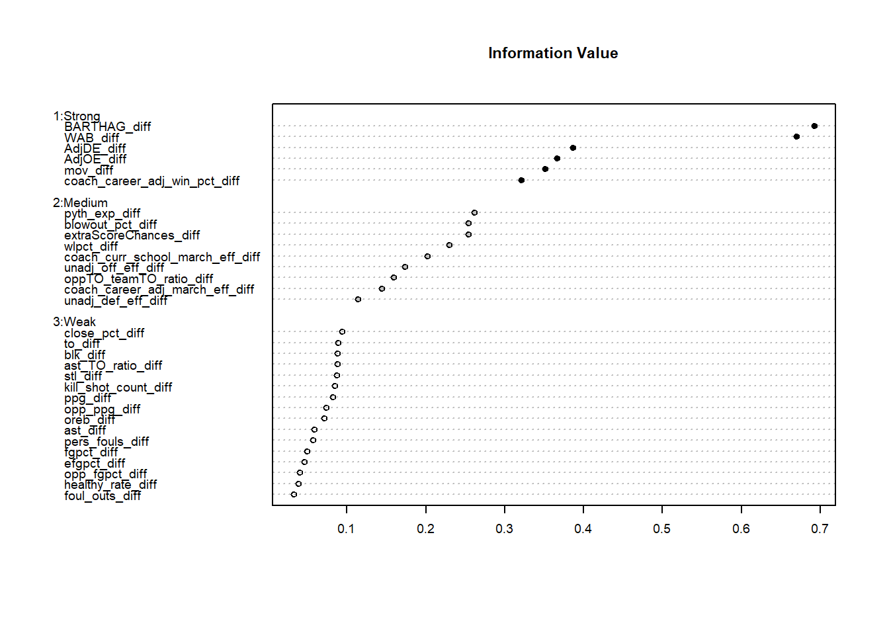
Now, let’s jump into the logistic regression model. By converting all variables to categorical via SMBinning, the logistic regression has now passed all of its assumptions. I added significant variables after strategically binning, which all had an IV of at least 0.01.
From here, I performed backward selection to identify the most important binned variables (and non-binned categorical variables I originally had in my dataset) to keep in the final model. This left me with 8 binned variables:
- Blocks
- Extra Scoring Chances
- Coach Career Adjusted Win %
- Adjusted Offensive Efficiency
- Adjusted Defensive Efficiency
I did one final check of multicollinearity with VIF and a likelihood ratio test to ensure all variables were significant and not correlated. Both checks passed!
new.model <- glm(Team_A_Winner ~ blk_diff_bin + extraScoreChances_diff_bin + AdjOE_diff_bin +
AdjDE_diff_bin,
data = train_LR,
family = binomial(link = "logit"))
#Checking multicollinearity and using Likelihood Ratio Test (LRT)
car::vif(new.model) #all < 5 GVIF## GVIF Df GVIF^(1/(2*Df))
## blk_diff_bin 1.056989 1 1.028100
## extraScoreChances_diff_bin 1.062677 2 1.015314
## AdjOE_diff_bin 1.082773 2 1.020080
## AdjDE_diff_bin 1.109688 2 1.026361## Analysis of Deviance Table (Type III tests)
##
## Response: Team_A_Winner
## LR Chisq Df Pr(>Chisq)
## blk_diff_bin 11.908 1 0.0005589 ***
## extraScoreChances_diff_bin 26.935 2 0.00000141613017 ***
## AdjOE_diff_bin 77.326 2 < 0.00000000000000022 ***
## AdjDE_diff_bin 47.391 2 0.00000000005118 ***
## ---
## Signif. codes: 0 '***' 0.001 '**' 0.01 '*' 0.05 '.' 0.1 ' ' 1After building the model, I did a quick evaluation metric using the coefficient of discrimination (plotting how well the model separates winners and losers). It appears the model does a somewhat good job of discriminating between winners and losers when the predicted probability is either very high or very low. However, predicted probabilities closer to 0.5 to 0.7 are a tossup and it does worse at differentiating between winners and losers.
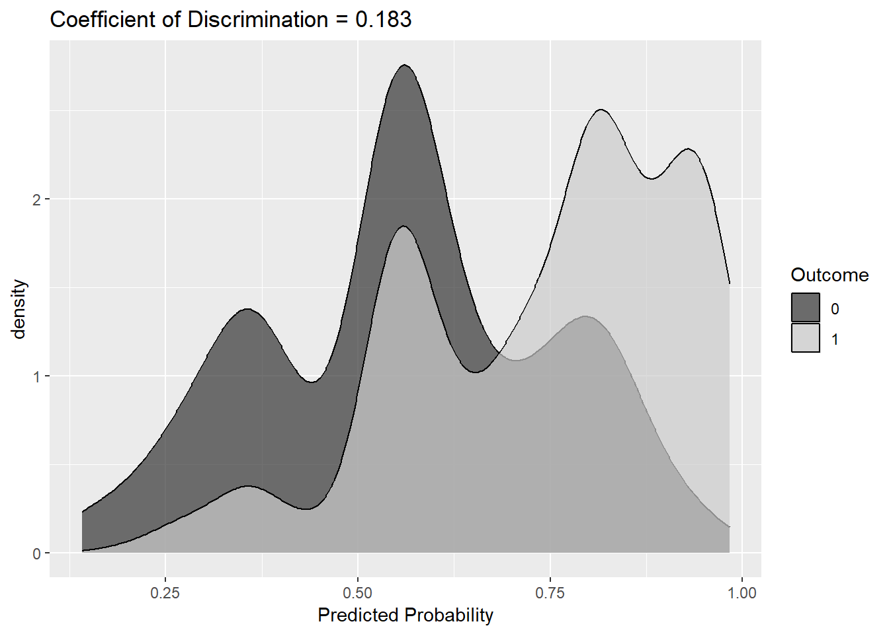
Random Forest
The next model to test was a Random Forest. The first step is to see what the best number of trees to use for the model. It appears the MSE levels out around 250 trees, but to be safe since computing time isn’t an issue here, I use 500 trees.
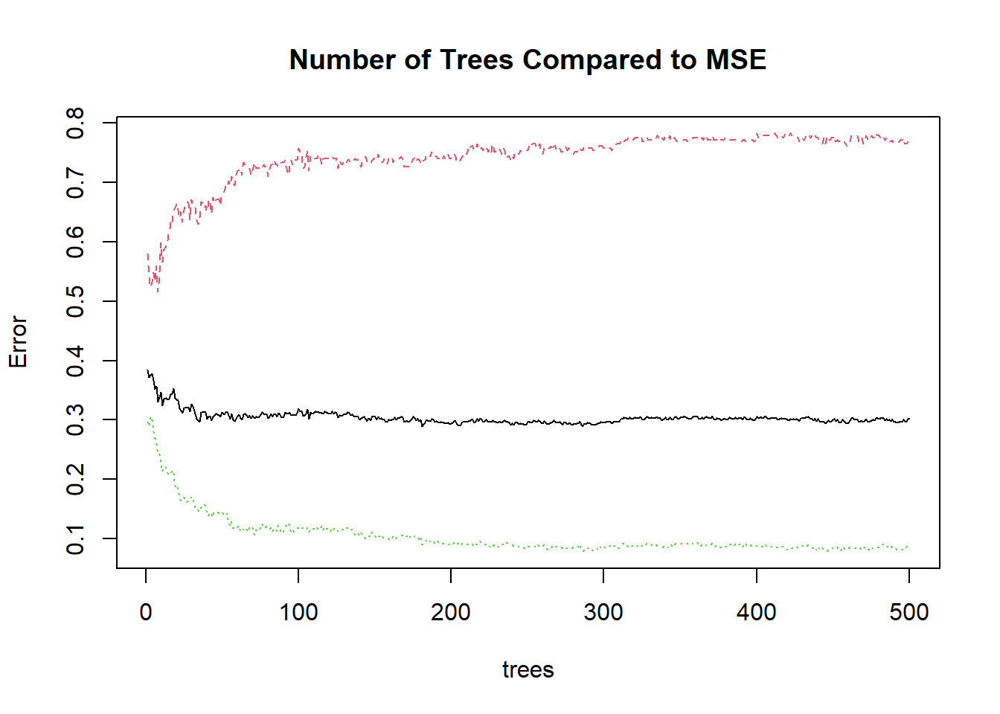
The next step is to tune the Random Forest model with 500 trees. I need to figure out the optimal number of random variables to use at each split, so I create an elbow plot. The out-of-bag observation error is minimized with an mtry of 3, so that is what I will use to train the model.
#tuning model
set.seed(12345)
tuneRF(x = train_rf[,-1], y = train_rf[,1], #column 1 has response variable
plot = TRUE, ntreeTry = 500, stepFactor = 0.5, method = 'class')## mtry = 7 OOB error = 30.49%
## Searching left ...
## mtry = 14 OOB error = 30.7%
## -0.007092199 0.05
## Searching right ...
## mtry = 3 OOB error = 30.27%
## 0.007092199 0.05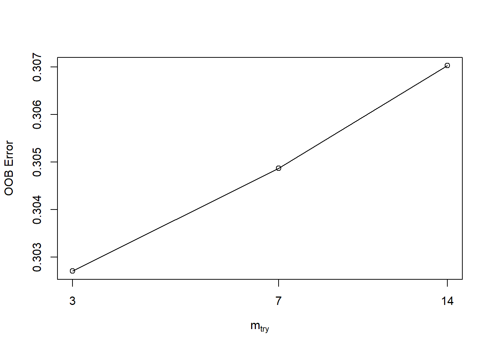
## mtry OOBError
## 3.OOB 3 0.3027027
## 7.OOB 7 0.3048649
## 14.OOB 14 0.3070270#above output said optimal mtry is 3.
set.seed(12345)
rf.mm <- randomForest(Team_A_Winner ~ .,
data = train_rf, ntree = 500, mtry = 3, importance = TRUE,
method = 'class')After defining the Random Forest model, I summarize it with a variable importance plot. Using mean decrease in accuracy as well as mean decrease in Gini as evaluation metrics, it appears that the top predictors are:
- Bart Torvik BARTHAG
- Bart Torvik Adj DE + OE
- Bart Torvik WAB
- Coach Career Adj Win %
- Blowout %
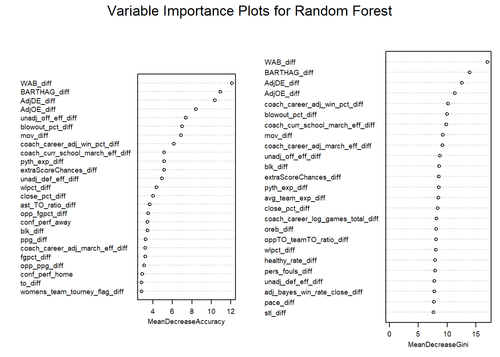
XGBoost
The next model I tried was an Xtreme Gradient Boosting (XGBoost) model. Like a tree-based algorithm that Random Forest uses, this model sequentially builds its trees based on the error of the previous split.
I start by running a cross validation search to minimize the number of trees on the validation set’s root mean square error (RMSE). We see that 3 trees appears to be optimal.
I then run a grid search across number of trees, learning rate, maximum depth of the trees, and subsampling. XGBoost is very flexible for hyperparameter tuning and grid searching. Lastly, I run these possible grid values through a 10-fold cross validation with XGBoost to determine the optimal parameters.
We see that the best tune to this grid search is 3 trees, a max depth of 2, a learning rate of 0.4, subsample ratio of columns when constructing each tree of 1, and subsample ratio of 1.
# xgb.cv(
# data = dtrain,
# nrounds = 500, # set high - early stopping will cut it short
# nfold = 10,
# early_stopping_rounds = 20, # stop if no improvement after 20 rounds
# verbose = 1
# )## nrounds eta max_depth gamma colsample_bytree min_child_weight subsample auc
## 105 3 0.4 2 0 1 1 1 0.705196Lastly, I define the final model with the tuned parameters and look at variable importance. This plot will automatically cluster variables statistically based on similar gain. We see the most important cluster is the difference in a teams’ wins above bubble (WAB). Likewise, the second most important cluster consists of adjusted offensive & defensive efficiency.
The third best cluster contains Bart Torvik’s BARTHAG, team blowout percentage, steals, and blocks.
# variable importance
xgb.ggplot.importance(xgb.importance(feature_names = colnames(train_x), model = xgb.mm)) +
theme_classic()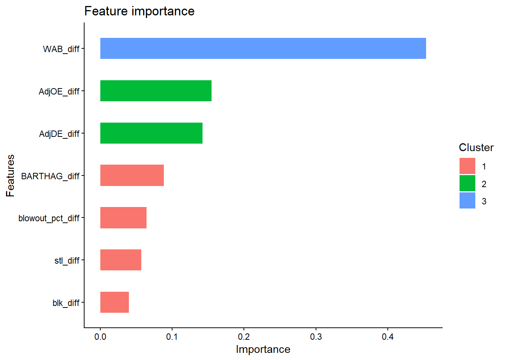
Support Vector Machine (SVM)
For the next model to try, I explored a support vector machine (SVM) model. I used the svm() function since this is a classification problem and a radial kernel to capture more non-linearities in the data.
#Building the svm model
set.seed(12345)
svm.mm <- svm(train_x, train_y, kernel = "radial", probability = TRUE)Naive Bayes
Now I explored a Naive Bayes model, another great supervised classification model. This looks to classify based on observations similar characteristics or features and also evaluates based on past decisions of observations similar to this one. This approach is an alternative to the frequentist approach in statistics, with instead trying a Bayesian approach.
#resets training set & removes bins created above
train <- matchup_final[matchup_final$season %in% c(2008:2022),]
valid <- matchup_final[matchup_final$season %in% c(2023,2024,2025),]
drop_cols <- c("season", "home_id", "away_id",
"home_short_display_name", "away_short_display_name")
train_nb <- train[, !names(train) %in% drop_cols]
valid_nb <- valid[, !names(valid) %in% drop_cols]
conditional_nb <- conditional_data_final[, !names(conditional_data_final) %in% drop_cols]
# tune_grid <- expand.grid(
# usekernel = c(TRUE, FALSE),
# fL = c(0, 0.5, 1),
# adjust = c(0.1, 0.5, 1)
# )
#
# set.seed(12345)
# nb.mm.caret <- caret::train(Team_A_Winner ~ . -season -home_id -away_id -home_short_display_name -away_short_display_name, data = train,
# method = "nb",
# tuneGrid = tune_grid,
# trControl = trainControl(method = 'cv', number = 10))
#
# nb.mm.caret$bestTune
set.seed(12345)
nb.mm <- naiveBayes(Team_A_Winner ~., data = train_nb, laplace = 0, usekernel = TRUE, fL = 0, adjust = 0.1)Multivariate Adaptive Regression Splines (MARS)
MARS! This one is outta this world! Haha. This approach essentially uses piecewise regression to split into linear/non-linear patterns for each piece. Each split is a “knot” with more knots = more lines. MARS avoid overfitting with the knots by using generalized cross validation (GCV), a fast cross validation method.
We see from the model summary that 8 of the 51 variables were used, which appear to be differences in:
- WAB
- BARTHAG
- Extra Scoring Chances
- Blowout %
- WL %
- Coach Career Win %
- Points per Game
- Blocks
The variable importance printout also highlights the number of subsets we saw these variables occur in, so this model supports WAB, BARTHAG, and extra scoring chances as the most important (similar to other models).
#resets training set & removes bins created above
train <- matchup_final[matchup_final$season %in% c(2008:2022),]
valid <- matchup_final[matchup_final$season %in% c(2023,2024,2025),]
drop_cols <- c("season", "home_id", "away_id",
"home_short_display_name", "away_short_display_name")
train_earth <- train[, !names(train) %in% drop_cols]
valid_earth <- valid[, !names(valid) %in% drop_cols]
conditional_earth <- conditional_data_final[, !names(conditional_data_final) %in% drop_cols]
mars2 <- earth(Team_A_Winner ~ .,
data = train_earth,
glm = list(family = binomial(link= "logit")))
summary(mars2)## Call: earth(formula=Team_A_Winner~., data=train_earth, glm=list(family=binomial(link="logit")))
##
## GLM coefficients
## 1
## (Intercept) 2.290337
## h(-0.489295-blk_diff) -0.276946
## h(-6.38321-ppg_diff) 0.177540
## h(extraScoreChances_diff-4.61333) 0.557129
## h(0.218333-blowout_pct_diff) -2.805628
## h(coach_career_adj_win_pct_diff-0.138834) 10.192374
## h(0.0231605-BARTHAG_diff) -16.072368
## h(BARTHAG_diff-0.0231605) -106.024380
## h(BARTHAG_diff-0.0317709) 107.851355
## h(3.54522-WAB_diff) -0.451632
## h(0.0846154-wlpct_diff) 4.097537
##
## GLM (family binomial, link logit):
## nulldev df dev df devratio AIC iters converged
## 1148.91 924 952.427 914 0.171 974.4 5 1
##
## Earth selected 11 of 22 terms, and 8 of 62 predictors
## Termination condition: RSq changed by less than 0.001 at 22 terms
## Importance: WAB_diff, BARTHAG_diff, extraScoreChances_diff, blowout_pct_diff, wlpct_diff, ...
## Number of terms at each degree of interaction: 1 10 (additive model)
## Earth GCV 0.1834779 RSS 162.0984 GRSq 0.1477388 RSq 0.184234## nsubsets gcv rss
## WAB_diff 10 100.0 100.0
## BARTHAG_diff 8 51.4 60.8
## extraScoreChances_diff 8 45.0 56.5
## blowout_pct_diff 7 37.3 49.8
## wlpct_diff 7 37.3 49.8
## coach_career_adj_win_pct_diff 3 21.7 30.9
## ppg_diff 2 16.1 24.3
## blk_diff 1 8.0 15.71.6 Model Comparison
Now that I have built these models, let’s compare on the validation sets. The main takeaways from this output are that the Random Forest, Naive Bayes, and XGBoost perform the best. I think it is odd the MARS model did not perform as well, considering it has performed strongly in the past.
## [1] "Logistic Regression AUC Curve on Validation Set"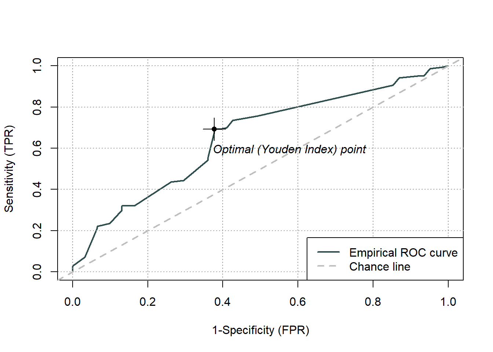
## [1] "XGBoost AUC Curve on Validation Set"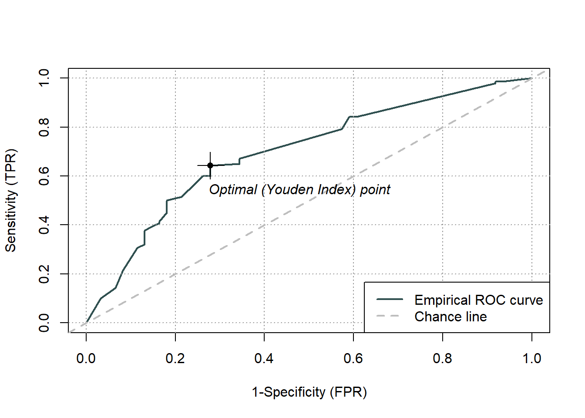
## [1] "Random Forest AUC Curve on Validation Set"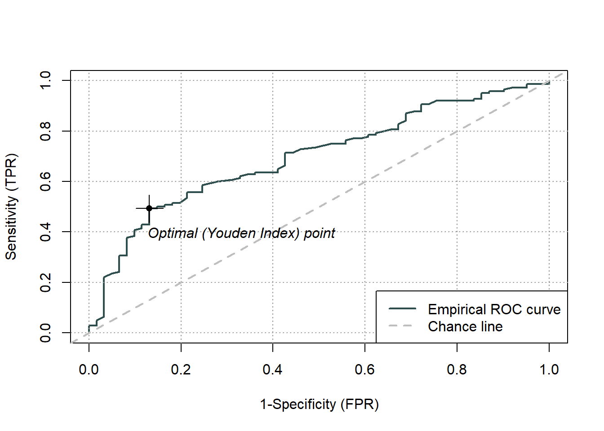
## [1] "MARS AUC Curve on Validation Set"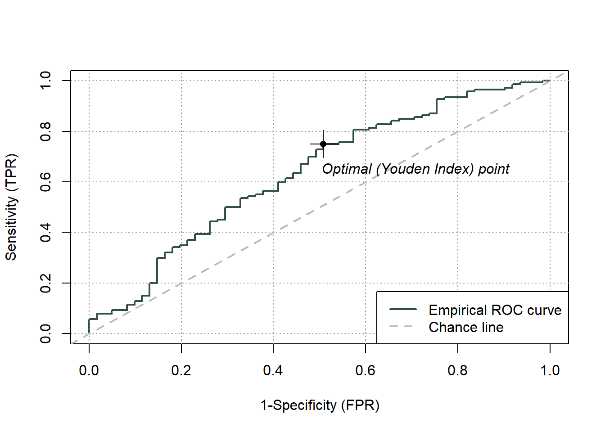
## [1] "SVM AUC Curve on Validation Set"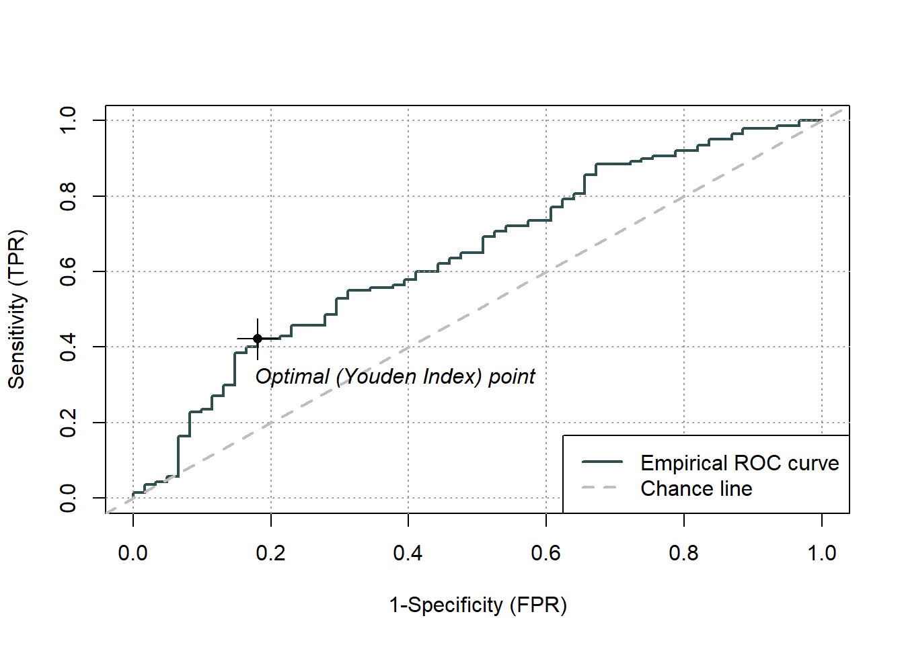
## [1] "Naive Bayes AUC Curve on Validation Set"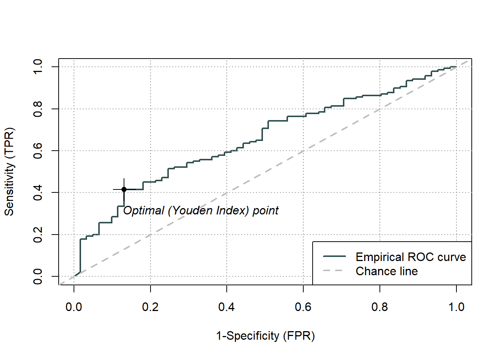
## Model Valid_AUC
## 1 Random Forest 0.698829039812646
## 2 XGBoost 0.698653395784543
## 3 Naive Bayes 0.653922716627635
## 4 Logistic Regression 0.652751756440281
## 5 SVM 0.64367681498829
## 6 MARS 0.6358313817330211.7 Results
The Random Forest favored upsets more than the other models, while the XGBoost did better in years that were more chalk (like 2025). I decided to ensemble the latter 4 models (MARS, Naive Bayes, SVM, and Logistic Regression) as its own 3rd model. With this, if at least 2 of the 4 models predicted a higher seed winning, I went with the higher seed.
After training the model on the 2008-2022 matchups and evaluating how well the model performs on the 2023-2025 validation set, I am interested in how well it performs in terms of the ESPN March Madness brackets, which is total points. Therefore, I ran the models on every conditional matchup for the year 2023-2025 to test what the corresponding ESPN points will be from the best models (and if there is a significant difference from the AUC). This was a very manual process.
- For the 2023-2025 March Madness tournaments, the 2008-2022 Random Forest model performed the best, while doing an excellent job at identifying early round upsets, such as:
- 15 seed Princeton Sweet 16 run (2023)
- 5 seed San Diego State winning the championship (they lost in the 2023 championship!)
- 11 seed NC State to the Elite 8 (and they even surpassed this expectation! 2024 DJ Burnsss!)
- 11 seed Duquesne over BYU and 12 seeds Grand Canyon + James Madison over Saint Mary’s + Wisconsin, respectively (2024)
- 12 seed Colorado State over Memphis (2025)
While I am excited about the Random Forest predicting these matchups correctly, there were also gross inaccuracies, such as sending 12 seed Drake or Grand Canyon to the Final Four. One trend I noticed in these types of predictions were that there was a signal there… just not a Final Four worthy team. I manually over-rode some of those decisions with just a Round of 64 win for that team.
Another interesting finding I saw was that there were certain regions of the bracket where the model predicted BOTH a 12 and 13 seed upset. A lot of times in these cases, it was actually the opposite!
I was really surprised the MARS model did not do well, as I thought that works the best with sports data.
Overall, the ESPN scores on the 2023-2025 brackets ranged: - Random Forest: 650-1140 - XGBoost: 420-1000 - Other 4 Model Ensemble: 700-850
Like I said, if I take the raw output of these models they might not do as well. But I provided some manual overriding to these outputs in order to improve predictions.
#Function test conditional results on 2023-2025 brackets
conditional_data_final %>%
filter(season == 2024,
home_short_display_name == "Houston",
away_short_display_name == "UConn") %>%
mutate(other4Models = ifelse(winnerLogReg + winnerMARS + winnerSVM + winnerNB>=2, "team_a", "team_b")) %>%
dplyr::select(season, team_a = home_short_display_name,
team_b = away_short_display_name,
winnerXGB,
winnerRF,
other4Models)## # A tibble: 1 × 6
## season team_a team_b winnerXGB winnerRF other4Models
## <fct> <chr> <chr> <dbl> <dbl> <chr>
## 1 2024 Houston UConn 0 0 team_a2026 Predictions
Here is my projected Final Four for the raw Random Forest, XGBoost, and Other4 Ensemble models, as well as my Final Four for the “manual overriding” of some of the Random Forest.
Notably, many of the models predict Michigan as the winner, which as an avid Penn State fan, it was difficult to submit brackets with Michigan winning. However, they look great this year.
Notably, a lot of the models really were against sending many 1 seeds to the Final 4, so I made sure to have at least 2 in the manual override bracket.
Random Forest (predicted champion: Gonzaga)
South Florida (11 seed)
Iowa (9 seed)
Gonzaga (3 seed)
Michigan (1 seed)
XGBoost (predicted champion: Michigan)
Vanderbilt (5 seed)
UConn (2 seed)
Michigan (1 seed)
Purdue (2 seed)
Other 4 Models (MARS, Naive Bayes, SVM, Logistic Regression) (predicted champion: Michigan)
Vanderbilt (5 seed)
St. John’s (5 seed)
Michigan (1 seed)
Purdue (2 seed)
Random Forest (w/ some human intervention) (predicted champion: Michigan)
Illinois (3 seed)
UConn (2 seed)
Michigan (1 seed)
Arizona (1 seed)
Post Tourney Update: Will update after the tournament
Testing on 2026 data
The code below re-runs the two best models on the 2026 March Madness bracket by combining the full 2008-2025 training and validation set into one, ultimately assisting in my predictions for the 2026 tournament.
Now, modeling:
Now let’s predict the test set:
Evaluation:
conditional_data_final %>%
filter(season == 2026,
home_short_display_name == "North Carolina",
away_short_display_name == "VCU") %>%
mutate(other4Models = ifelse(winnerLogReg + winnerMARS + winnerSVM + winnerNB>=2, "team_a", "team_b")) %>%
dplyr::select(season, team_a = home_short_display_name,
team_b = away_short_display_name,
winnerXGB,
winnerRF,
other4Models)## # A tibble: 1 × 6
## season team_a team_b winnerXGB winnerRF other4Models
## <fct> <chr> <chr> <dbl> <dbl> <chr>
## 1 2026 North Carolina VCU 0 0 team_b1.8 Areas of Improvement
While I thoroughly enjoyed the process of creating machine learning models to predict the winners of March Madness, I also noted so areas of improvement, limitations, or future opportunities:
NIL $ Spend - As we enter the age of NIL, I think it could be helpful to include NIL spend (or, since this is not particularly public information, I can try to create a proxy for team spend). As we saw in the 2025 tournament, there were four 1-seeds in the Final 4 and the bracket was fairly chalk through the Sweet 16. The lack of upsets can potentially be correlated with NIL valuation.
- To that point, there is also a rise of G-League players potentially rejoining NCAA teams, so I will have to consider how they impact the sport.
Injury Modeling Improvement - I currently have a variable to model players who missed games during the regular season & the percentage of total minutes that they impacted the team. However, diving deeper in to injury data requires a historical record of logged injuries for players dating back to 2008, which due to college rules, is not required or available. Something along the lines of this article: https://www.statswithsasa.com/2024/03/18/march-madness-injuries/
Different Target Variable - I would like to consider modeling a team’s margin of victory as a continuous predictor variable, however to still use this as a predictor of each matchup. Switching up the target variable could offer additional insights in to the teams and create a unique model to ensemble with a binary classification.
Non-Conference Performance - Other variables I have considered is including non-conference performance specifically (which I technically separated as the 1st half of the season). This was especially noticeable with 2024 Clemson, who despite being very underrated before the tournament - ended up going on an Elite 8 Run. They played poorly in ACC but dominated out of conference games.
Model Evaluation by Round - In addition to variables to add to the model, I think it could be interesting to structure the model based on performance in each round (or build separate models for each, as there could be various signals for each round of the tournament).
Median vs. Mean - I currently pull averages of all of my variables, but it could slighlty improve the signal of the model by using the median instead of the mean, or even including other summary statistic variables like min, max, standard deviation, etc.
Data per Possession - It could be beneficial to pull the team stats on a per possession view as well, not per game average. Since tempo is usually a significant variable in the modeling process, then breaking out performance per possession could make for a more interesting method to predict winners.
Change Evaluation - Instead of analyzing just the matchups, I could build a simulation-esque analysis, where we simulate how the team would perform against every other team in the tournament and use that to determine who wins each matchup. This answers the question: do they have a bad matchup, or are they an underrated team?
1.9 References and Acknowledgements
I want to give a few shoutouts, which greatly helped me in this personal project. Firstly, thank you to Saiem Gilani and Bart Torvik for the hoopR package and Bart Torvik data, which made this analysis possible. Next, I want to thank Russ Spicer, a long-time D3 college basketball head coach, who offered many insights in to the structure and thought of making March Madness picks. Lastly, I want to thank my roommate Andy Chapman, who asked for a shoutout in giving the recommendation on building coaching variables.
TeamRankings.com historical CBB team stats
SportsReference.com historical CBB team/coach stats
BartTorvik.com historical CBB stats (especially efficiency metrics)
KenPom.com did not use data but referenced methodology
https://www.printyourbrackets.com/images/marchmadness-2023.pdf historical bracket performance for any year
1.10 Additional Code Appendix
This appendix serves as additional code I wrote to build out the logic and motivation behind certain decisions.
- Optimal Weights for 1-H, 2-H Home, 2-H Away
I needed to determine the optimal weighting of the first half, second half/home, and second half/away portions of the season in order to build out my analysis. To keep it as simple as possible, I created a target variable called “deep run” which determined if the team went to at least the Elite 8 or not. Second, I ran a quick logistic regression on the entire weighted dataframe to see which weighting scheme returned the highest AUC.
One small note here - Colgate was a tournament team in 2021, but did not start their season until January 1st, 2021 due to the COVID-19 pandemic. Their weighting scheme was slightly affected since they did not technically have a “first half” of the season.
This strategy returned the highest AUC for a weighting scheme of 30% 1-H, 30% 2-H Home, and 40% 2-H Away, when favoring the 2-H Away games.
This strategy returned the highest AUC for a weighting scheme of 50% 1-H, 30% 2-H Home, and 20% 2-H Away, when there are no bounds on the data. This was the weight used for the final model.
See Github optimal weight calculation.R file for code
- Pythagorean Expectation
In order to calculate a team’s expected winning percentage, I used the Pythagorean Expectation (originally derived from Bill James) which is the ratio of a team’s total points raised to the n power, over the sum of their total points to the n power plus their opponent’s total points to the n power. I ran a grid search on possible exponent values from 2 to 20 stepping by 0.1 to find the optimal exponent.
In order to do that, I calculated how far off the team’s true win percentage was off the expected win percentage using mean absolute error (MAE) and found the lowest MAE. This was minimized at an exponent of 8.6.
See Github pyth exp calculation.R file for code on calculation
- Histograms
In order to save space in the output above, I am attaching all of the histograms from the final model here for visual support.
All differenced variables show a Normal distribution, which is positive to see for the variables.
var.names <- colnames(train)[c(9:57)]
var.names <- var.names[!(var.names %in% c("womens_team_tourney_flag_diff", "power_conf_diff", "power_conf_extra_diff"))]
# for (i in var.names) {
# hist(train[[i]], xlab = i)
# }
plot_df <- train %>%
dplyr::select(all_of(var.names)) %>%
pivot_longer(cols = everything(), names_to = "variable", values_to = "value")
# plot
ggplot(plot_df, aes(x = value)) +
geom_histogram(bins = 30) +
facet_wrap(~ variable, scales = "free", ncol = 6) +
theme_minimal() +
labs(title = "Distribution of Variables")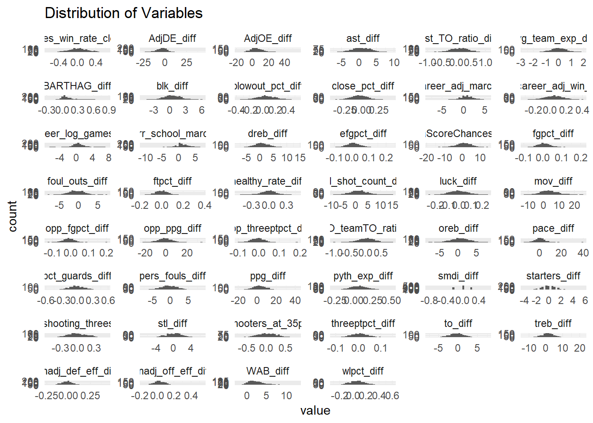
- Variable Decisions
For the Bayesian shrinkage formula to calculate close game win percentage, the formula is:
Adj_Win_Rate = (Wins + Global_Win_Rate + Prior_Strength) / (Games + Prior_Strength)
For the pace formula, I chose a Y of 0.455, per Ken Pomeroy’s blog https://kenpom.com/blog/the-possession/